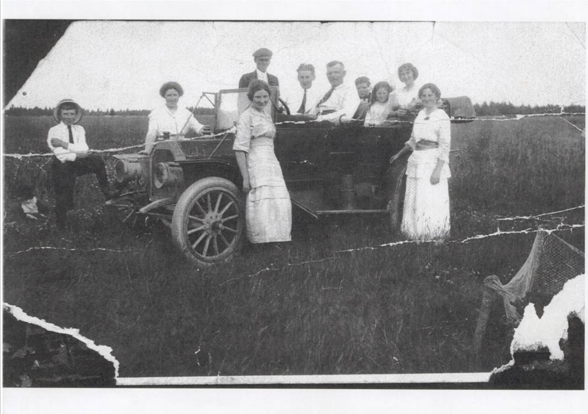
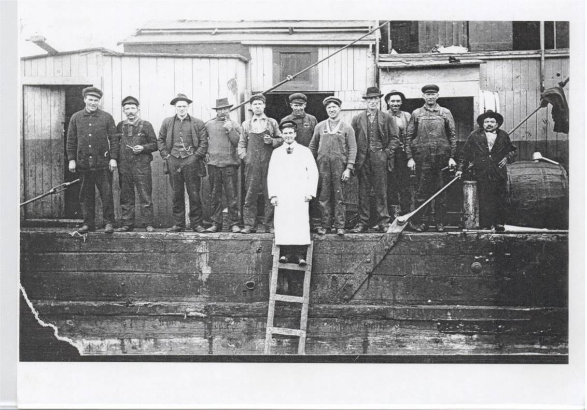
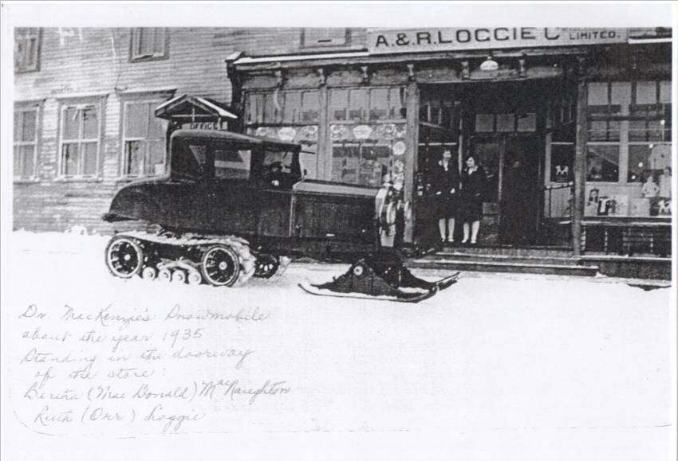
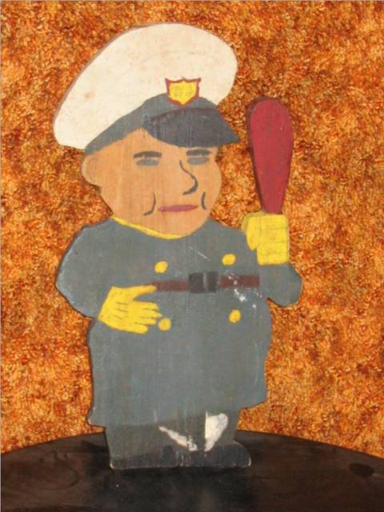

The Family Chronicle
No. 128 December 20, 2006
____________________________________________________________________
Black River photos courtesy Ernie MacLean

Automobile owned by Mr. F. A. Fowlie of Little Branch

Crew on dredge owned by Mr. Fred A. Fowlie

Snowmobile owned by Dr. J. B. MacKenzie
First auto in Black River
Mr. Fred. A. Fowlie of Little Branch had the first auto in Black River. The photo at left was taken at Donald MacLean’s (now home of Ernest and Helen MacLean. Donald MacLean is sitting behind the wheel and Germaine Kelly is standing on the far side of the car.
Fishing
Dredges were used to remove ground from river channels and around wharves. The dredge to the left was owned by Mr. Fred A. Fowlie of Little Branch -later an MLA for the area. Others included in the photo: Frank MacLean in centre, Alexander (Eckie) MacLean and Dan MacLean.
Snowmobile
Dr. J. B. MacKenzie carried out his medical practice from his office in Loggieville. In addition to seeing patients at his office, he made house calls in the country. This photo of his snowmobile was taken in front of the A & R Loggie Company store in Loggieville about 1935. Standing in the doorway are Bertha (MacDonald) MacNaughton and Ruth (Orr) Loggie. The snowmobile conversion is to a Model A. Ford believed to be owned by the A & R Loggie Company.
George Elbridge Watling
A note from Tina (Watling) Newton informed me that her father, George Elbridge Watling died. George, or Elbridge as we knew him, was born in Augusta, Georgia on November 24, 1913 and died on December 12, 2006 in Newport, New Hampshire. Elbridge was the son of Jubal George and Emma (Ronan) Watling. He leaves two daughters, Sarah and Christine (Tina)
Saddle Boards
Saddle boards came up in a recent conversation and, yesterday, while driving, I looked for saddle boards. I did not see any. New houses do not have saddle boards but old houses did. Saddle boards were the finishing touches at the peak of a house and were simply boards nailed together to form a cap at the peak of a house.
NB Archives
Readers may be interested in searching the Daniel Johnson Vital Statistics Database at the New Brunswick Archives. http://archives.gnb.ca/ The database includes a name index of 640,984 records gathered fro 75 New Brunswick newspapers between 1784 and 1895. I’ve had a look at it and am impressed.
My Guardian

Shop and Home Ec were both offered at the Miramichi Rural High School and I took both. The above photo is of one of my shop projects. The back carries the inscription “Patented March 24, 1944”. Some readers of that era may recall having made similar project.
Seasons’ Greetings
This will be my last letter this year so I will use it to extend greetings and good wishes to all readers. And may 2007 bring Peace.
The Family Chronicle (Copyright) is an occasional newsletter published by Don Glendenning and posted on the family website. It is intended to share information about my family, community and the times in which I grew up. While every effort is made to be accurate, errors are likely to occur. Comments, enquiries and information may be sent to 62 Queen Elizabeth Drive, Charlottetown, PEI, C1A 3A9. Tel: 902 892 5859. Email: dglende@auracom.com Web: www.glendenning.net/don